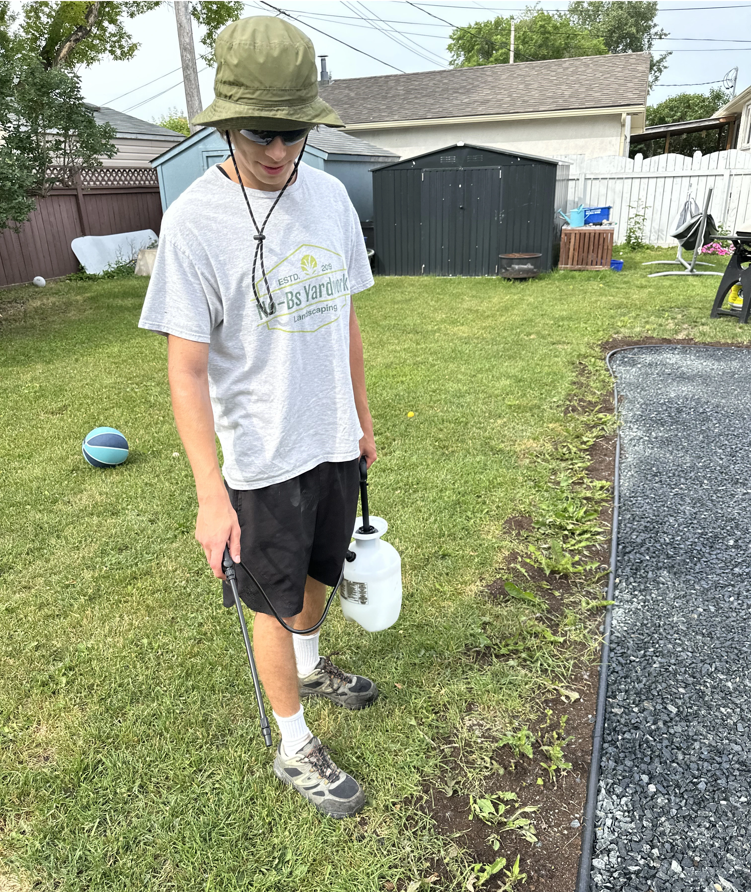
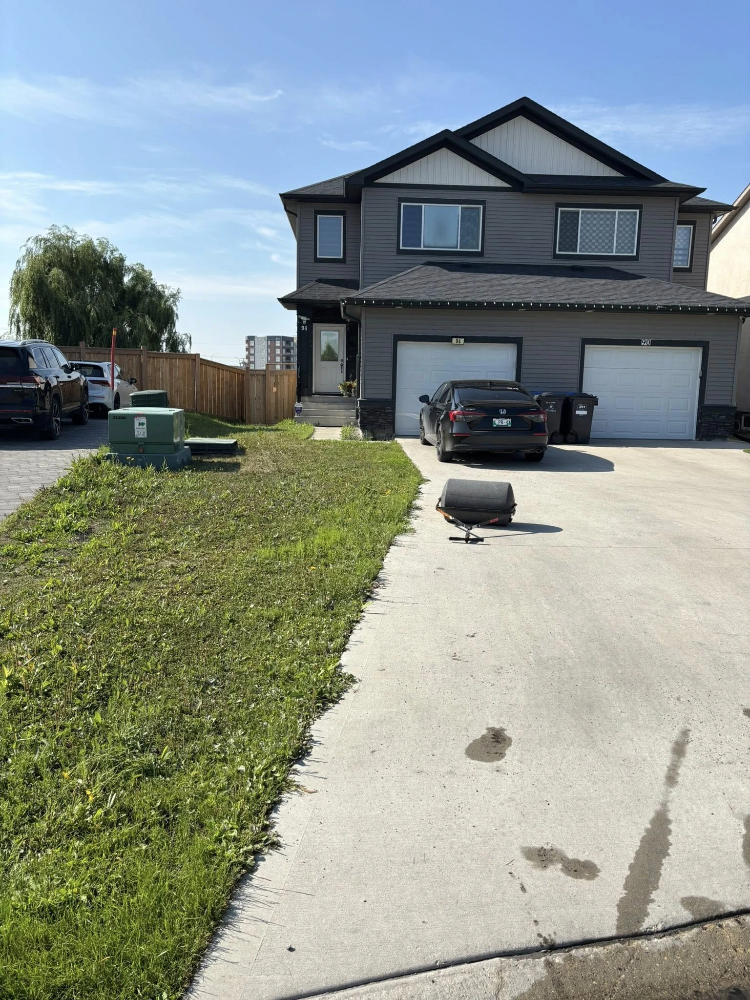
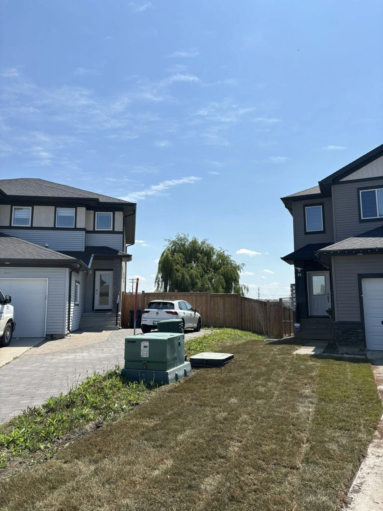

Winnipeg lawns face some of the toughest weeds in Canada — creeping bellflower, thistle, dandelions and crabgrass can take over fast. Our licensed technicians apply targeted liquid and granular treatments to stop weeds at the root and keep your lawn clean all season.
All weed spray applications are performed by licensed technicians following Manitoba pesticide regulations.
We identify the specific weeds on your property and apply the right treatment — no unnecessary chemicals, no guesswork.

A typical Winnipeg lawn in mid-summer with creeping bellflower and dandelions taking over. Without treatment, weeds crowd out grass and spread to neighbouring properties.
Near-monthly applications deliver the best results — significantly more effective than the industry-standard 3–4 treatments per year.
Consistent weed control gives your grass the space it needs to thicken up and crowd out future weeds naturally. The result: less treatment needed each year, and a lawn that stays cleaner on its own.

Winnipeg's most invasive weed. Deep taproots and underground rhizomes make it nearly impossible to pull by hand. Requires repeated chemical treatment over multiple seasons to bring under control.
Fast-spreading perennial with a deep, lateral root system. Even small root fragments left behind will regenerate. Spot spraying with selective herbicide at the rosette stage is most effective.
A Manitoba classic. Post-emergent liquid spray in spring and early fall kills dandelions at the root — far more effective than pulling. A single untreated plant can produce 15,000 seeds.
An annual that germinates in late spring when soil warms. Pre-emergent granular treatment in early May prevents germination — the most cost-effective approach for crabgrass control in Winnipeg.
A perennial grass weed that spreads by underground rhizomes. Difficult to treat selectively — we use targeted spot applications to minimize damage to surrounding lawn grass.
Common broadleaf weeds that spread quickly in thin or stressed lawns. Broadleaf herbicide treatments in spring and fall, combined with proper lawn care, keep these in check.
Best for targeting broadleaf weeds that are already present — dandelions, thistle, bellflower. The herbicide is absorbed through the leaf and translocates to the root for complete kill. Fast-acting and highly effective on established weeds.
Applied in early spring before soil reaches 10°C, granular pre-emergent prevents annual weeds like crabgrass from germinating. No germination = no weed problem. Best used as prevention before weeds appear.
Manitoba regulates pesticide application under The Pesticides & Fertilizers Control Act. All of our technicians hold valid pesticide applicator licenses. We follow all re-entry intervals, buffer zone requirements, and product label directions.
After each application we'll let you know the re-entry time (typically 2–4 hours once dry). We apply only when conditions are right — no wind, no rain in the forecast — to ensure the product stays where it's meant to be.

Everything you need to know about our weed control program — from how many treatments you need to whether it's safe for your kids and pets.
Call or message us — we're happy to talk through your specific weed situation.
Most Winnipeg lawns benefit from 3–4 treatments per season. For tougher weeds like creeping bellflower, near-monthly applications provide significantly better control and are what we recommend for best results.
Yes — once dry (typically 2–4 hours), our treatments are safe for children and pets. We follow all Manitoba pesticide regulations and will advise you on re-entry timing after each application.
Creeping bellflower is one of the most persistent weeds in Winnipeg due to its deep root system. Consistent treatment over multiple seasons is required. We use targeted applications that weaken the root system over time — there is no single-spray cure, but our program delivers measurable improvement each year.
We use both depending on the situation. Liquid sprays are best for broadleaf weeds already present. Granular pre-emergent is used in early spring to prevent annual weeds like crabgrass from germinating. Many properties benefit from a combination approach.